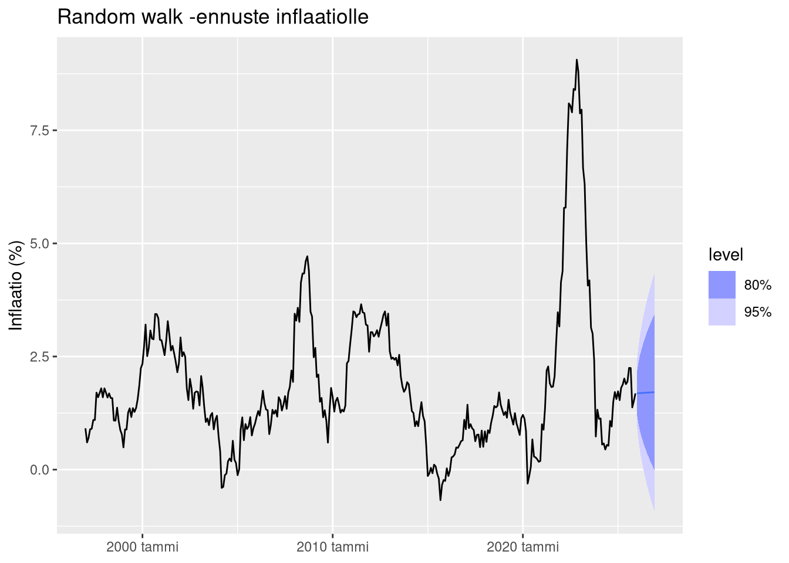
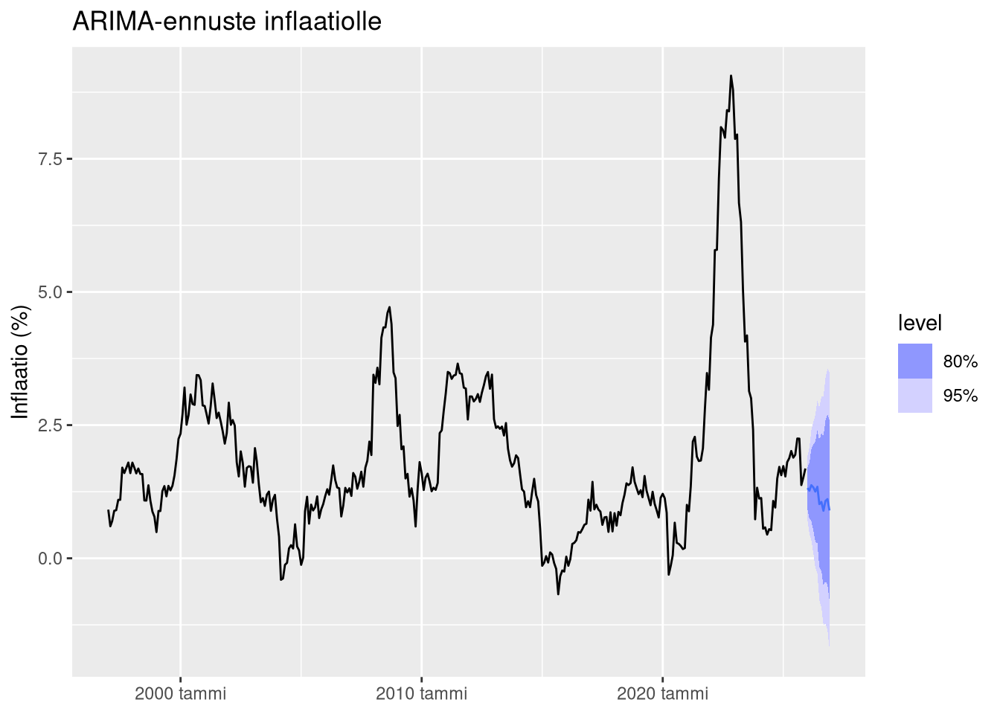

Osa 2: Kuinka vaikeaa inflaation ennustaminen on?
R
Data Science
talous
inflaatio
ennustaminen
Suomen inflaation kuvailua
Edellisessä osassa tarkasteltiin Suomen inflaatiodataa ja sen keskeisiä tilastollisia piirteitä. Analyysi osoitti, että inflaatio ei ole vakaa prosessi: siihen liittyy rakenteellisia muutoksia ja merkittäviä volatiliteetin vaihteluita.
Seuraava kysymys kuuluu:
Kuinka hyvin inflaatiota voidaan ennustaa?
Ennen monimutkaisten mallien rakentamista on hyödyllistä aloittaa yksinkertaisista vertailumalleista. Taloustieteessä nämä tunnetaan nimellä baseline models.
Yllättävää kyllä, monet hyvin yksinkertaiset mallit toimivat makrotaloudessa varsin kilpailukykyisesti. Tämä johtuu siitä, että useinkaan inflaation ennustaminen ei ole malliongelma, vaan informaatio-ongelma. Kaikkea tarvittavaa informaatiota ei välttämättä ole käytössä. Siksi yksinkertaisia malleja käytetään usein vertailukohtina monimutkaisemmille menetelmille.
Tässä osassa tarkastellaan kahta klassista baseline-mallia:
random walk
ARIMA
Näiden avulla voidaan arvioida, kuinka ennustettavaa inflaatio ylipäätään on.
Ennustamisen arviointikehikko
Ennustemallien arvioinnissa yksi keskeinen ongelma liittyy siihen, miten data jaetaan mallin estimointiin ja testaamiseen.
Aikasarja-analyysissä tavallinen satunnainen train–test-jako ei ole mahdollinen, koska havaintojen järjestys ajassa on merkityksellinen.
Siksi käytetään rolling-origin -arviointia.
Tässä lähestymistavassa malli estimoidaan aina menneellä datalla ja ennuste tehdään tulevaisuuteen. Prosessi toistetaan useita kertoja eri ajankohdista. Tämä vastaa realistista ennustamistilannetta.
Rolling-origin -menetelmä ei ole vain tekninen yksityiskohta. Se on keskeinen osa uskottavaa ennustearviointia.
Ilman sitä ennustemallien suorituskykyä yliarvioidaan systemaattisesti.
Ennustehorisontti
Makrotaloudessa inflaatiota tarkastellaan usein vuositasolla. Tässä analyysissä käytetään 12 kuukauden ennustehorisonttia.
Tämä tarkoittaa, että jokaisessa iteroinnissa ennustetaan inflaatiota vuoden päähän.
Random walk -malli
Yksinkertaisin mahdollinen ennustemalli on random walk.
Random walk -mallissa oletetaan, että paras ennuste tulevalle arvolle on nykyinen arvo. Toisin sanoen muutokset ovat täysin satunnaisia.
Matemaattisesti malli voidaan kirjoittaa
\(y_{t+1}=y_t+\epsilon_t\), missä
\(\epsilon_t\) on satunnainen virhetermi.
Vaikka malli on äärimmäisen yksinkertainen, se toimii monissa taloudellisissa aikasarjoissa yllättävän hyvin.
Makrotaloudessa random walk ei ole naiivi malli. Se on vahva baseline.
Jos monimutkaisempi malli ei kykene päihittämään random walkia, se viittaa siihen, että sarjan lyhyen aikavälin dynamiikka on pitkälti satunnainen.
Tämä on yksi keskeisistä syistä, miksi makrotalousennusteet epäonnistuvat.
Random walk -mallin estimointi
Random walk voidaan estimoida helposti fable-paketin avulla.
Ennusteen visualisointi
Seuraavaksi tuotetaan ennuste vuoden päähän.
Random walk -malli tuottaa ennusteen, joka seuraa viimeisintä havaintoa. Ennusteeseen liittyvä epävarmuus kasvaa ajan myötä.
Tämä on tyypillistä stokastisille prosesseille.
Ennusteita tarkasteltaessa huomataan, että mallien erot ovat usein pieniä normaalina aikana.
Erot kasvavat vasta silloin, kun taloudessa tapahtuu poikkeuksellisia muutoksia.
Juuri näissä tilanteissa ennusteilla olisi eniten merkitystä – ja juuri silloin ne ovat epäluotettavimmillaan.
ARIMA-malli
Toinen klassinen aikarivimalli on ARIMA (AutoRegressive Integrated Moving Average).
ARIMA-mallit yhdistävät kolme komponenttia:
autoregressio (AR)
differensointi (I)
liukuvan keskiarvon termi (MA)
Näiden avulla voidaan mallintaa sarjan riippuvuuksia menneisiin havaintoihin.
ARIMA-mallin estimointi
fable-paketti sisältää automaattisen ARIMA-mallin valinnan.
Mallin rakennetta voidaan tarkastella seuraavasti.
Series: inflation_yoy
Model: ARIMA(3,0,1)(0,0,2)[12] w/ mean
Coefficients:
ar1 ar2 ar3 ma1 sma1 sma2 constant
1.6836 -0.4907 -0.1995 -0.7549 -0.6611 -0.1811 0.0118
s.e. 0.0871 0.1367 0.0576 0.0766 0.0559 0.0586 0.0008
sigma^2 estimated as 0.09142: log likelihood=-82.24
AIC=180.48 AICc=180.9 BIC=211.29ARIMA(inflation_yoy) |
|---|
[[mdl_ts]] |
Automaattinen mallinvalinta valitsee parametrien yhdistelmän, joka minimoi informaatiokriteerin (yleensä AICc).
ARIMA-ennuste
Seuraavaksi tuotetaan ennuste vuoden päähän.

ARIMA-malli reagoi inflaation historialliseen dynamiikkaan. Tämä voi tuottaa realistisempia ennusteita kuin random walk, jos sarjassa on systemaattisia riippuvuuksia.
ARIMA-mallit hyödyntävät sarjan historiallista rakennetta. Tämä toimii hyvin, jos menneisyys on hyvä ennustaja tulevaisuudelle.
Makrotaloudessa tämä oletus rikkoutuu usein.
Rakenteelliset muutokset, kuten finanssikriisi tai energiashokki, muuttavat dynamiikkaa tavalla, jota pelkkä historiallinen data ei pysty ennakoimaan.
Rolling-origin -arviointi
Yksittäinen ennuste ei kuitenkaan riitä mallien vertailuun.
Tarvitaan systemaattinen arviointi useiden ennustetilanteiden yli. Tämä voidaan tehdä stretch_tsibble()-funktion avulla.
Tässä:
ensimmäinen estimointijakso sisältää 120 havaintoa
ennusteharjoitus toistetaan jokaisessa seuraavassa ajankohdassa
Tämä tuottaa realistisen simulaation ennustetilanteista.
Mallien estimointi cross-validationissa
Yksittäinen malli ei vielä kerro mitään ennustemenetelmän todellisesta suorituskyvystä. Mallien toimivuutta on arvioitava tilanteessa, jossa ennuste tehdään aina vain menneeseen tietoon perustuen.
Tätä varten käytetään rolling-origin cross-validation -menetelmää, joka on aikarivianalyysin standardi lähestymistapa. Menetelmässä aineistoa ei jaeta satunnaisesti opetus- ja testijoukkoihin. Sen sijaan mallia estimoidaan toistuvasti kasvavalla havaintojoukolla, ja jokaisessa vaiheessa ennuste tehdään tulevaisuuteen.
Prosessi etenee seuraavasti:
Malli estimoidaan ensimmäisestä havaintojaksosta.
Ennuste tuotetaan tuleville kuukausille.
Malli estimoidaan uudelleen hieman pidemmällä datalla.
Ennuste tuotetaan uudelleen.
Tämä toistetaan jokaisessa ajankohdassa koko aineiston läpi.
Tällä tavoin syntyy suuri joukko ennusteita, jotka simuloivat realistista ennustamistilannetta. Jokainen ennuste perustuu vain siihen tietoon, joka olisi ollut saatavilla kyseisenä ajankohtana.
Tässä analyysissä cross-validationissa estimoidaan kaksi mallia:
random walk
ARIMA
Näitä käytetään baseline-malleina, joihin myöhemmät bayesilaiset mallit voidaan myöhemmin verrata.
Ennusteet
Kun mallit on estimoitu cross-validation -kehikossa, voidaan tuottaa ennusteet jokaiselle arviointijaksolle.
Jokaisessa iteroinnissa malli tuottaa ennusteen inflaatiolle seuraaville kuukausille. Näin muodostuu suuri joukko ennusteita eri ajankohdista. Tämä mahdollistaa mallien suorituskyvyn arvioinnin historiallisessa datassa.
Keskeinen etu tässä lähestymistavassa on se, että ennusteita ei arvioida vain yhdessä tilanteessa. Sen sijaan mallin suorituskykyä tarkastellaan monissa eri taloustilanteissa, kuten
matalan inflaation aikana
talouskriisien aikana
voimakkaiden hintashokkien aikana
Tämä on tärkeää erityisesti makrotaloudessa, jossa talouden dynamiikka voi muuttua nopeasti.
Kun ennusteet on tuotettu, niiden tarkkuutta voidaan arvioida vertaamalla ennustettuja arvoja toteutuneeseen inflaatioon. Seuraavassa vaiheessa mallien suorituskykyä arvioidaan erilaisten ennustetarkkuusmittareiden avulla.
Ennustetarkkuus
Ennustemallien tarkkuutta voidaan arvioida esimerkiksi seuraavilla mittareilla:
RMSE (Root Mean Squared Error)
MAE (Mean Absolute Error)
.model | .type | ME | RMSE | MAE | MPE | MAPE | MASE | RMSSE | ACF1 |
|---|---|---|---|---|---|---|---|---|---|
ARIMA | Test | 0.25444350 | 1.415600 | 0.9119091 | 7.71907 | 174.0258 | 0.6936091 | 0.7291993 | 0.8877719 |
RW | Test | -0.02316451 | 1.570212 | 1.0003437 | -11.45028 | 120.9703 | 0.7608736 | 0.8088429 | 0.8879169 |
Tulokset osoittavat, että yksinkertainen random walk -malli saavuttaa ennustetarkkuuden, joka on lähellä ARIMA-mallia.
Tämä ei ole sattumaa.
Makrotaloudessa suuri osa lyhyen aikavälin vaihtelusta on vaikeasti ennustettavaa. Monimutkaisempi malli ei välttämättä lisää informaatiota, jos data ei sisällä ennustettavaa rakennetta.
Tämä johtaa keskeiseen kysymykseen:
Kuinka suuri osa inflaatiosta on ylipäätään ennustettavissa?
Tulokset kertovat, kumpi baseline-malli tuottaa tarkempia ennusteita historiallisessa datassa.
Makrotaloudessa ei ole harvinaista, että random walk toimii lähes yhtä hyvin kuin monimutkaisemmat mallit.
Jos näin tapahtuu, se kertoo paljon itse ilmiön ennustettavuudesta.
Baseline-mallit ovat tärkeä askel analyysissä, koska ne määrittävät vähimmäistason, jonka monimutkaisempien mallien tulee ylittää.
Jos kehittyneempi malli ei paranna ennustetarkkuutta, sen lisäämä monimutkaisuus ei ole perusteltua.
Kaipaatko analyysiä tai onko sinulla projekti, jonka haluat toteuttaa? Ota yhteyttä kristian.vepsalainen@proton.me . Olen käytettävissäsi.